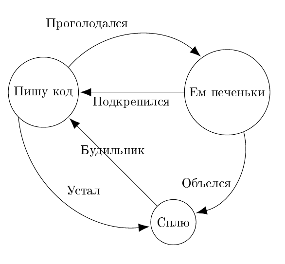
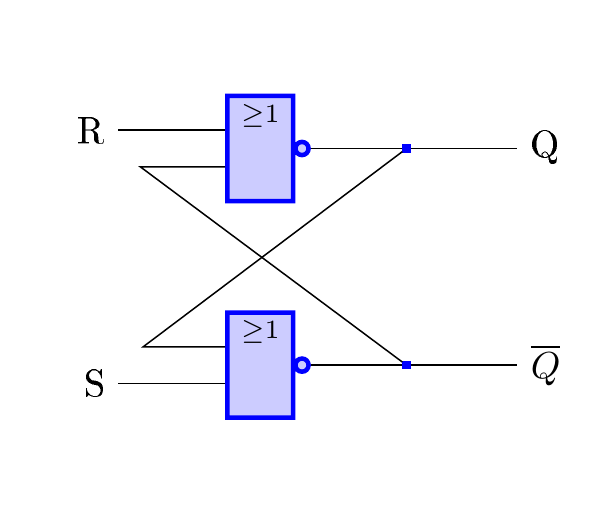

Информационные технологии
12. Технические рисунки
Краткие теоретические сведения
Лекции
PGF/TIKZ manual
Пересказ руководства на русском
Задание к работе
Нарисуйте график функции
\(y=x^2+2*x-1\)
.
Нарисуйте конечный автомат:

.
Нарисуйте схему:

Prev - 11. Диаграммы
Next - Самостоятельная работа
Home
Лекции
Лабораторные работы
1. Работа с текстом и кодировки
2. Язык разметки markdown
3. Таблицы, код и формулы в markdown
4. Математические формулы
5. Основы HTML
6. Стиль текста
7. Активные элементы текста
8. Формат DOCX
9. Растровые рисунки
10. Векторные рисунки
11. Диаграммы
12. Технические рисунки
Самостоятельная работа
Вопросы к экзамену